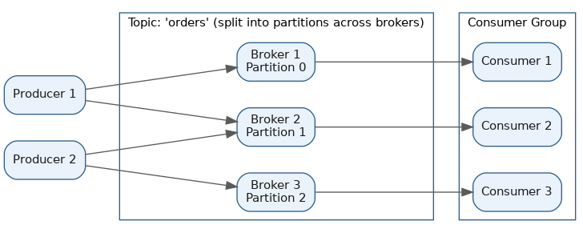
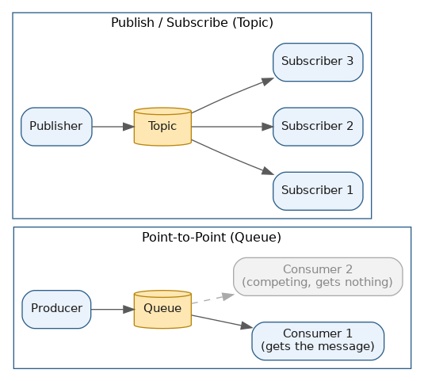

Distributed Messaging Systems
Table of Contents
Overview
A messaging system is infrastructure that lets different parts of a software system talk to each other without talking to each other directly. Instead of Service A calling Service B and waiting for an answer, Service A drops a message — a small packet of data, like "order #4521 was placed" — into a middleman system, and Service B picks it up whenever it's ready. That middleman is usually called a message broker, and the whole idea works a lot like a post office: you don't hand a letter straight to your friend, you drop it in a mailbox and let the postal system deliver it on its own schedule.
This page walks through why messaging systems exist, how Apache Kafka in particular is built, the core patterns almost every messaging system implements, the popular systems available today, a head-to-head comparison of the three classic brokers, and how these systems scale under real production load. A companion page in the site's System Design — Building Units section, Messaging & Streaming, covers the same territory from a building-block perspective within a larger architecture — worth reading alongside this one.
Introduction to Messaging Systems
The reason messaging systems exist is to solve a problem that shows up constantly in large systems: tight coupling combined with timing mismatches. If an e-commerce checkout service directly called the email service, the inventory service, the shipping service, and the analytics service every time someone placed an order, a single slow or temporarily-down dependency would make the entire checkout fail or hang. Put a message queue in between instead, and the checkout service just publishes an "order placed" message and moves on immediately — the other services consume that message independently, each at its own pace. This is decoupling: sender and receiver don't need to know anything about each other's internals, uptime, or speed.
A handful of terms come up constantly in this space and are worth locking down early:
- Producer — any application or service that creates and sends a message.
- Consumer — any application or service that reads and processes a message.
- Broker — the server (or cluster of servers) that receives messages from producers, stores them temporarily or durably, and hands them off to consumers.
- Queue / topic — the named channel messages are organized into, similar to a labeled mailbox.
Delivery guarantees describe what promises the system makes about whether a message might be lost, delivered once, or delivered more than once. There are three common levels: at-most-once (messages might be lost, but never duplicated), at-least-once (messages are never lost, but a consumer might see the same one twice), and exactly-once (the ideal, but the hardest guarantee to actually deliver — no loss, no duplicates).
Messaging systems show up everywhere in modern backend architecture — sending a confirmation email after signup, processing a payment asynchronously, feeding real-time analytics dashboards, connecting microservices in an e-commerce platform, or streaming clickstream data into a recommendation engine. Popular real-world systems include Apache Kafka, RabbitMQ, ActiveMQ, Amazon SQS/SNS, and Google Cloud Pub/Sub, all of which come up later on this page.
Introduction to Kafka
Apache Kafka is one of the most widely used distributed messaging and event-streaming platforms in the industry — originally built at LinkedIn and now used by companies like Netflix, Uber, LinkedIn, and Airbnb to move huge volumes of data in real time. Unlike a traditional message queue, which mostly just passes messages along and deletes them once delivered, Kafka is best understood as a distributed, append-only log: it keeps a durable, ordered record of everything that happened, and multiple consumers can independently replay or re-read that history.
The basic building block is a topic — a named category or feed of messages, like "user-signups" or "payment-events." Because a single topic can receive far more data than one machine can handle, Kafka splits each topic into partitions: an ordered, append-only sequence of messages, where each message within a partition gets a permanent, increasing ID called an offset. Splitting a topic into multiple partitions is what lets Kafka spread the work of storing and serving messages across many machines instead of one — it's the core trick behind Kafka's scalability.
Those machines are brokers — a broker is simply a server that stores some partitions and serves read/write requests for them, and a Kafka cluster is a group of brokers working together. Each partition is also replicated across multiple brokers (commonly three copies), so if one broker crashes the data isn't lost and another broker (the "leader" for that partition) can take over. Producers write messages into a topic — Kafka decides, often based on a key like a user ID, which partition a message lands in, so related messages stay in order. Consumers read messages back out, and consumers are typically organized into consumer groups — a set of consumer instances that split the partitions of a topic between them to process messages in parallel, with each partition read by only one consumer within a group at a time. Kafka tracks each consumer group's progress through a partition using an offset, essentially a bookmark, so a restarted consumer knows exactly where to resume.
Kafka scales so well for one central reason: partitions are the unit of parallelism, so both storage and consumption can be spread horizontally across as many brokers and consumers as there are partitions. Need more throughput? Add more partitions and brokers, and add more consumers — up to the number of partitions — to read in parallel. Because Kafka writes sequentially to disk, lets the OS handle caching efficiently, and has consumers pull data rather than the broker pushing to each one individually, Kafka can sustain extremely high throughput — often millions of messages per second across a cluster — while also retaining data for hours, days, or indefinitely, so it can be replayed later for reprocessing or debugging.

Messaging Patterns
A small set of core patterns underlies almost every messaging system, and knowing them makes it much easier to pick the right tool for a given problem.
- Point-to-point (queue-based) messaging — a message is placed on a queue, and exactly one consumer receives and processes it, even if several consumers are listening on the same queue. Once a message is picked up and acknowledged, it's removed and won't be delivered again. This is ideal for distributing work items — e.g. a queue of image-resizing jobs where each job should be handled by exactly one worker, not all of them. Amazon SQS and classic RabbitMQ queues follow this pattern.
- Publish/subscribe (pub/sub) messaging — a producer ("publisher") sends a message to a topic without knowing or caring who's listening, and every current subscriber gets its own copy of the message. This is useful when one event needs to trigger multiple independent reactions — e.g. a new order triggering the email service, the analytics service, and the fraud-detection service, each doing its own separate thing. Kafka topics, Google Cloud Pub/Sub, and Amazon SNS all follow this pattern.
- Fan-out — really a specific, common use of pub/sub, where one incoming message is broadcast to many downstream consumers or queues at once. A classic example is Amazon SNS fanning a single notification out to multiple SQS queues, each feeding a different downstream service, so every service gets a tailored message while the producer only publishes once.
- Request/reply messaging — even though messaging is usually "fire and forget," some systems build request/reply on top of queues: the requester sends a message with a "reply-to" address, and the responder sends the answer back on a separate channel, giving synchronous-style question/answer behavior while still going through a broker.
In practice, real systems often combine these. A very common enterprise design publishes an event to a pub/sub topic and then fans each subscriber's messages out into that subscriber's own private queue — combining the "broadcast to many services" benefit of pub/sub with the "exactly one worker handles this particular copy" reliability of point-to-point queues.

Popular Messaging Queue Systems
Several messaging systems are widely adopted in production today, each with its own design philosophy:
- Apache Kafka — the distributed, log-based event-streaming platform described above; best for high-throughput event streaming, log aggregation, and situations where you want to replay history.
- RabbitMQ — an open-source message broker built on the AMQP (Advanced Message Queuing Protocol) standard. It's queue-based, supports flexible routing through "exchanges" (which decide how a message gets routed to one or more queues based on rules), and is a popular choice for traditional task queues and request-processing pipelines.
- ActiveMQ — a mature, open-source broker from the Apache Software Foundation implementing the JMS (Java Message Service) standard, commonly used in enterprise Java environments needing traditional queueing and topic-based messaging.
- Amazon SQS — a fully managed, point-to-point queue service in AWS. Consumers poll SQS for messages; it's simple, durable, and widely used to decouple microservices without running your own broker.
- Amazon SNS — a managed pub/sub service in AWS, often paired with SQS so a single published notification can fan out to many queues, email addresses, or HTTP endpoints.
- Google Cloud Pub/Sub — a fully managed, globally scalable pub/sub service that natively supports fan-out to many subscribers without needing a second service (unlike the SNS+SQS combination on AWS).
- NATS, Amazon Kinesis, Azure Event Hubs — other notable systems: NATS is a lightweight, high-performance messaging system popular in cloud-native and IoT settings; Kinesis and Event Hubs are managed, Kafka-like streaming services from AWS and Azure respectively.
Choosing among these usually comes down to a few questions: Do you need to replay historical events (favor Kafka/Kinesis)? Do you want a fully managed service with no servers to run (favor SQS/SNS/Pub/Sub)? Do you need complex routing rules or strict ordering per queue (favor RabbitMQ)? Are you already deep in a Java/JMS enterprise stack (ActiveMQ may fit naturally)?
RabbitMQ vs. Kafka vs. ActiveMQ
These three are the classic trio compared in system design discussions, and the single biggest thing to understand is a core distinction: RabbitMQ and ActiveMQ are traditionally "message passers" — once a message is delivered and acknowledged, it's typically removed from the queue — while Kafka is a "message log," where messages are retained and can be re-read by multiple consumers even after they've already been processed once.
| Dimension | RabbitMQ | Apache Kafka | ActiveMQ |
|---|---|---|---|
| Underlying model | Queue-based (AMQP protocol) | Distributed append-only log | Queue/topic-based (JMS standard) |
| Message retention | Removed once consumed/acked | Retained for a configurable period, replayable | Removed once consumed/acked |
| Throughput | High, but generally lower than Kafka | Very high, built for massive volume | Moderate |
| Ordering | Guaranteed within a single queue | Guaranteed within a partition, not across partitions | Guaranteed within a queue/topic |
| Message priority | Supported | Not natively supported | Supported |
| Routing flexibility | Very flexible (exchanges, bindings, routing keys) | Simple (topic + partition based) | Selectors and topic filters |
| Typical use case | Task queues, RPC-style workflows, flexible routing | Event streaming, log aggregation, real-time pipelines, data integration | Traditional enterprise messaging, JMS-based Java systems |
| Operational complexity | Moderate | Higher — running Kafka well at scale takes real expertise (or a managed service) | Lower |
In short: reach for RabbitMQ when you need reliable task distribution with rich routing logic and don't need to replay history; reach for Kafka when you're dealing with high-volume event streams, need multiple independent consumers to read the same data, or want durability and replay; reach for ActiveMQ when you're in a traditional enterprise Java environment that already expects JMS semantics. It's common for a single company to run more than one of these for different jobs — for example, Kafka for the core event backbone and RabbitMQ for internal task queues.
Scalability and Performance
Messaging systems have to scale in two directions at once: accepting more incoming data (write/produce throughput) and letting more consumers process that data quickly (read/consume throughput) — all while staying reliable if machines fail.
Kafka's scalability model is built around partitions. Because each partition can live on a different broker and be read by a different consumer, adding more partitions and brokers lets Kafka spread both storage and processing load horizontally — this is why Kafka clusters can handle millions of messages per second. A useful mental model: partitions define the maximum parallelism of a topic, so a topic with 10 partitions can be actively consumed by at most 10 consumers in a single consumer group at once. Too few partitions limits throughput and parallel consumption; too many adds overhead and operational complexity — real systems size partition counts based on target throughput divided by per-partition throughput.
RabbitMQ and ActiveMQ scale differently — mainly by clustering brokers and adding more consumers to compete for messages on a queue. Because they weren't designed around a partitioned log, their peak throughput per node is typically lower than Kafka's, especially at very large data volumes. That said, RabbitMQ can still comfortably handle tens of thousands of messages per second per node, which is more than enough for most task-queue workloads — Kafka's advantage really shows up at the extreme, high-volume end, like ingesting every clickstream event across a large website.
Cloud-managed services like Amazon SQS, SNS, and Google Cloud Pub/Sub take scaling off your plate entirely: the provider automatically scales the underlying infrastructure, and you're billed by usage rather than needing to size and operate a cluster yourself. The tradeoff is usually less fine-grained control over ordering, partitioning behavior, and cost predictability at very large scale compared to self-managing something like Kafka.
Finally, performance and reliability are often in tension. Stronger guarantees — exactly-once delivery, strict global ordering, or synchronous replication before acknowledging a write — generally cost some throughput and latency. Most production systems land on "at-least-once" delivery paired with idempotent consumers (consumers that safely handle a duplicate message without side effects, e.g. checking "have I already processed order #4521?" before acting) as the practical sweet spot between reliability and speed.